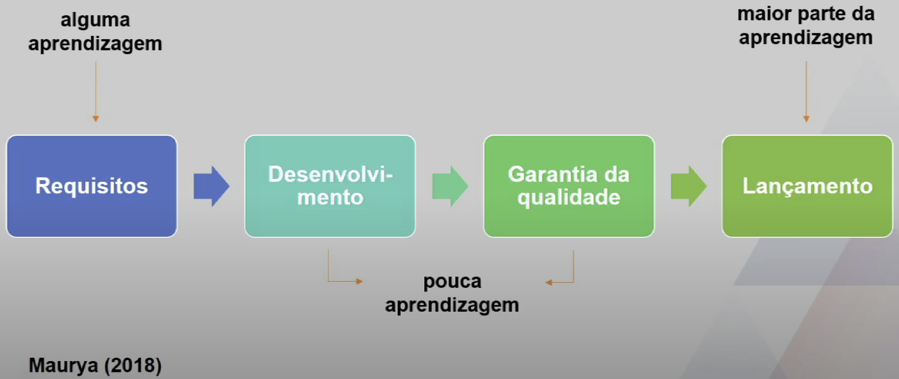
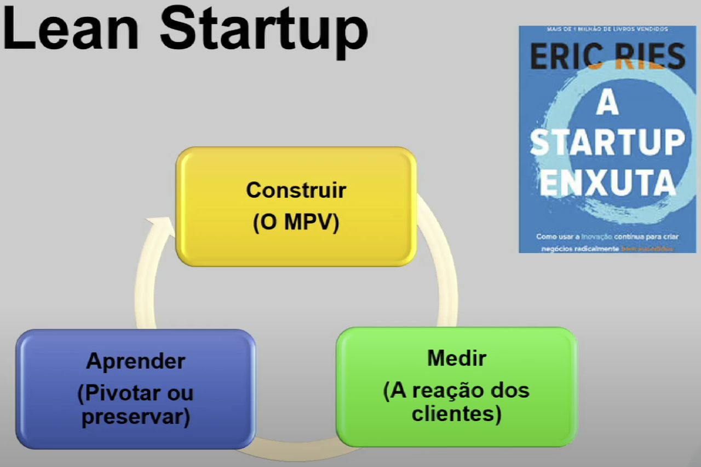
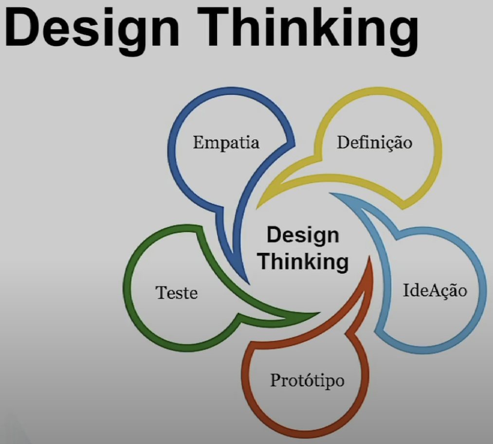

Disciplinas
GESTÃO DE INOVAÇÃO E DESENVOLVIMENTO DE PRODUTOS Concluído
Materiais
Vídeo 2 - Gestão da Inovação e Desenvolvimento de Produtos - Lean Startup e Design Thinking (UNIVESP) sendProfessor responsável pela disciplina: Alexandre Aparecido Dias (UNIVESP)
Temas da aula
- Fundamentos da metodologia Lean Startup (Startup enxuta)
- Etapas do Design Thinking
Fundamentos da metodologia Lean Startup (Startup enxuta)
Como desenvolver um produto que atenda às necessidades dos clientes?
Como desenvolver um produto que atenda às necessidades dos clientes economizando tempo e dinheiro?
Ciclo convencional de DP

- Conjunto mínimo de recursos para resolver o conjunto certo de problemas.
- Baseado em entrevistas para definição do problema e da solução.
- Que problema está resolvendo?
- Como os clientes resolvem este problema hoje?
- De quem é a dor?
- Quem serão os usuários iniciais?
- Quais são as características mínimas lançadas?
- Os consumidores pagarão pela solução e por qual preço?
-
Aprendemos o suficiente quando o produto demonstra tração inicial
- Quando 40% ou mais dos clientes ficarem muito desapontados se o produto deixar de existir.
Design Thinking
- Empatia
- Definição
- Teste
- IdeAção
- Protótipo

Concluindo
"Não cabe a você pedir aos seus clientes que elaborem uma lista de funcionalidades para seu produto. Sua tarefa é conhecer os problemas deles e resolvê-los com uma boa solução"
Ash Maurya (2018)